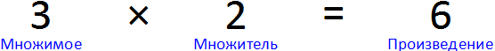
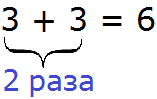
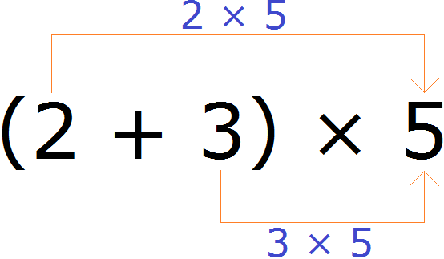
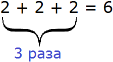
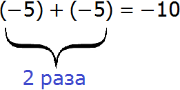
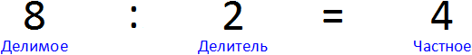
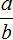
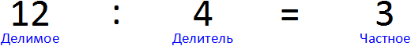
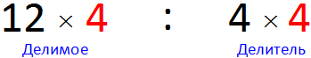
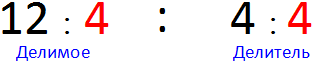

При умножении и делении целых чисел применяется несколько правил. В данном уроке мы рассмотрим каждое из них.
При умножении и делении целых чисел следует обращать внимание на знаки чисел. От них будет зависеть какое правило применять. Необходимо также изучить несколько законов умножения и деления. Изучение этих правил позволит избежать некоторых досадных ошибок в будущем.
Законы умножения
Некоторые из законов математики мы рассматривали в уроке законы математики. Но мы рассмотрели не все законы. В математике немало законов и разумнее будет изучать их последовательно по мере необходимости.
Для начала вспомним из чего состоит умножение. Умножение состоит из трёх параметров: множимого, множителя и произведения. Например, в выражении 3 × 2 = 6, число 3 — это множимое, число 2 — множитель, число 6 — произведение.

Множимое показывает, что именно мы увеличиваем. В нашем примере мы увеличиваем число 3.
Множитель показывает во сколько раз нужно увеличить множимое. В нашем примере множитель это число 2. Этот множитель показывает во сколько раз нужно увеличить множимое 3. То есть в ходе операции умножения число 3 будет увеличено в два раза.
Произведение это собственно результат операции умножения. В нашем примере произведение это число 6. Это произведение является результатом умножения 3 на 2.
Выражение 3 × 2 также можно понимать как сумму двух троек. Множитель 2 в таком случае будет показывать сколько раз нужно повторить число 3:

Таким образом, если число 3 повторить два раза подряд, получится число 6.
Переместительный закон умножения
Множимое и множитель называют одним общим словом – сомножители. Переместительный закон умножения выглядит следующим образом:
От перестановки мест сомножителей произведение не меняется.
Проверим так ли это. Умножим например 3 на 5. Здесь 3 и 5 это сомножители.
3 × 5 = 15
Теперь поменяем местами сомножители:
5 × 3 = 15
В обоих случаях мы получаем ответ 15, поэтому между выражениями 3 × 5 и 5 × 3 можно поставить знак равенства, поскольку они равны одному тому же значению:
3 × 5 = 5 × 3
15 = 15
А с помощью переменных переместительный закон умножения можно записать так:
a × b = b × a
где a и b — сомножители
Сочетательный закон умножения
Этот закон говорит о том, что если выражение состоит из нескольких сомножителей, то произведение не будет зависеть от порядка действий.
К примеру, выражение 3 × 2 × 4 состоит из нескольких сомножителей. Чтобы его вычислить, можно перемножить 3 и 2, затем полученное произведение умножить на оставшееся число 4. Выглядеть это будет так:
3 × 2 × 4 = (3 × 2) × 4 = 6 × 4 = 24
Это был первый вариант решения. Второй вариант состоит в том, чтобы перемножить 2 и 4, затем полученное произведение умножить на оставшееся число 3. Выглядеть это будет так:
3 × 2 × 4 = 3 × (2 × 4) = 3 × 8 = 24
В обоих случаях мы получаем ответ 24. Поэтому между выражениями (3 × 2) × 4 и 3 × (2 × 4) можно поставить знак равенства, поскольку они равны одному и тому же значению:
(3 × 2) × 4 = 3 × (2 × 4)
24 = 24
а с помощью переменных сочетательный закон умножения можно записать так:
a × b × c = (a × b) × c = a × (b × c)
где вместо a, b, c могут стоять любые числа.
Распределительный закон умножения
Распределительный закон умножения позволяет умножить сумму на число. Для этого каждое слагаемое этой суммы умножается на это число, затем полученные результаты складывают.
Например, найдём значение выражения (2 + 3) × 5
Выражение находящееся в скобках является суммой. Эту сумму нужно умножить на число 5. Для этого каждое слагаемое этой суммы, то есть числа 2 и 3 нужно умножить на число 5, затем полученные результаты сложить:

(2 + 3) × 5 = 2 × 5 + 3 × 5 = 10 + 15 = 25
Значит значение выражения (2 + 3) × 5 равно 25.
С помощью переменных распределительный закон умножения записывается так:
(a + b) × c = a × c + b × c
где вместо a, b, c могут стоять любые числа.
Закон умножения на ноль
Этот закон говорит о том, что если в любом умножении имеется хотя бы один ноль, то в ответе получится ноль.
Произведение равно нулю, если хотя бы один из сомножителей равен нулю.
Например, выражение 0 × 2 равно нулю
0 × 2 = 0
В данном случае число 2 является множителем и показывает во сколько раз нужно увеличить множимое. То есть во сколько раз увеличить ноль. Буквально это выражение читается так: «увеличить ноль в два раза». Но как можно увеличить ноль в два раза, если это ноль? Никак!
Иными словами, если «ничего» увеличить в два раза или даже в миллион раз, всё равно получится «ничего».
И если в выражении 0 × 2 поменять местами сомножители, опять же получится ноль. Это мы знаем из предыдущего переместительного закона:
0 × 2 = 2 × 0
0 = 0
Примеры применения закона умножения на ноль:
5 × 0 = 0
5 × 5 × 5 × 0 = 0
2 × 5 × 0 × 9 × 1 = 0
В последних двух примерах имеется несколько сомножителей. Увидев в них ноль, мы сразу в ответе поставили ноль, применив закон умножения на ноль.
Мы рассмотрели основные законы умножения. Теперь рассмотрим самó умножение целых чисел.
Умножение целых чисел
Пример 1. Найти значение выражения −5 × 2
Это умножение чисел с разными знаками. −5 является отрицательным числом, а 2 – положительным. В таких случаях применяется следующее правило:
Чтобы перемножить числа с разными знаками, нужно перемножить их модули, и перед полученным ответом поставить минус.
−5 × 2 = − (|−5| × |2|) = − (5 × 2) = − (10) = −10
Обычно записывают короче: −5 × 2 = −10
Любое умножение может быть представлено в виде суммы чисел. Например, рассмотрим выражение 2 × 3. Оно равно 6.
2 × 3 = 6
Множителем в данном выражение является число 3. Этот множитель показывает во сколько раз нужно увеличить множимое 2. Но выражение 2 × 3 также можно понимать как сумму трёх двоек:

То же самое происходит и с выражением −5 × 2. Это выражение может быть представлено в виде суммы

А выражение (−5) + (−5) равно −10. Мы это знаем из прошлого урока. Это сложение отрицательных чисел. Напомним, что результат сложения отрицательных чисел есть отрицательное число.
Пример 2. Найти значение выражения 12 × (−5)
Это умножение чисел с разными знаками. 12 – положительное число, а (−5) отрицательное. Опять же применяем предыдущее правило. Перемножаем модули чисел и перед полученным ответом ставим минус:
12 × (−5) = − (|12| × |−5|) = − (12 × 5) = − (60) = −60
Обычно решение записывают покороче:
12 × (−5) = −60
Пример 3. Найти значение выражения 10 × (−4) × 2
Это выражение состоит из нескольких сомножителей. Сначала перемножим 10 и (−4), затем полученное число умножим на 2. Попутно применим ранее изученные правила:
Первое действие:
10 × (−4) = −(|10| × |−4|) = −(10 × 4) = (−40) = −40
Второе действие:
−40 × 2 = −(|−40 | × | 2|) = −(40 × 2) = −(80) = −80
Значит значение выражения 10 × (−4) × 2 равно −80
Запишем решение покороче:
10 × (−4) × 2 = −40 × 2 = −80
Пример 4. Найти значение выражения (−4) × (−2)
Это умножение отрицательных чисел. В таких случаях применяется следующее правило:
Чтобы перемножить отрицательные числа, нужно перемножить их модули и перед полученным ответом поставить плюс
(−4) × (−2) = |−4| × |−2| = 4 × 2 = 8
Плюс по традиции не записываем, поэтому просто записываем ответ 8.
Запишем решение покороче (−4) × (−2) = 8
Пример 5. Найти значение выражения −2 × (6 + 4)
Применим распределительный закон умножения, то есть умножим число −2 на каждое слагаемое суммы (6 + 4)
−2 × (6 + 4) = −2 × 6 + (−2) × 4
Теперь выполним умножение, и сложим полученные результаты. Попутно применим ранее изученные правила. Запись с модулями можно пропустить, чтобы не загромождать выражение
Первое действие:
−2 × 6 = −12
Второе действие:
−2 × 4 = −8
Третье действие:
−12 + (−8) = −20
Значит значение выражения −2 × (6 + 4) равно −20
Запишем решение покороче:
−2 × (6 + 4) = (−12) + (−8) = −20
Пример 6. Найти значение выражения (−2) × (−3) × (−4)
Выражение состоит из нескольких сомножителей. Сначала перемножим числа −2 и −3, и полученное произведение умножим на оставшееся число −4. Запись с модулями пропустим, чтобы не загромождать выражение
Первое действие:
(−2) × (−3) = 6
Второе действие:
6 × (−4) = −(6 × 4) = −24
Значит значение выражения (−2) × (−3) × (−4) равно −24
Запишем решение покороче:
(−2) × (−3) × (−4) = 6 × (−4) = −24
Законы деления
Прежде чем делить целые числа, необходимо изучить два закона деления.
В первую очередь, вспомним из чего состоит деление. Деление состоит из трёх параметров: делимого, делителя и частного. Например, в выражении 8 : 2 = 4, 8 – это делимое, 2 – делитель, 4 – частное.

Делимое показывает, что именно мы делим. В нашем примере мы делим число 8.
Делитель показывает на сколько частей нужно разделить делимое. В нашем примере делитель это число 2. Этот делитель показывает на сколько частей нужно разделить делимое 8. То есть в ходе операции деления, число 8 будет разделено на две части.
Частное – это собственно результат операции деления. В нашем примере частное это число 4. Это частное является результатом деления 8 на 2.
На ноль делить нельзя
Любое число запрещено делить на ноль.
Дело в том, что деление это действие, обратное умножению. Данную фразу можно понимать в прямом смысле. Например, если 2 × 5 = 10, то 10 : 5 = 2.
Видно, что второе выражение записано в обратном порядке. Если к примеру, у нас имеется два яблока и мы захотим увеличить их в пять раз, то мы запишем 2 × 5 = 10. Получится десять яблок. Затем, если мы захотим обратно уменьшить эти десять яблок до двух, то мы запишем 10 : 5 = 2
Точно так же можно поступать и с другими выражениями. Если к примеру 2 × 6 = 12, то мы можем обратно вернуться к изначальному числу 2. Для этого достаточно записать выражение 2 × 6 = 12 в обратном порядке, разделяя 12 на 6
12 : 6 = 2
Теперь рассмотрим выражение 5 × 0. Мы знаем из законов умножения, что произведение равно нулю, если хотя бы один из сомножителей равен нулю. Значит и выражение 5 × 0 равно нулю
5 × 0 = 0
Если записать это выражение в обратном порядке, то получим:
0 : 0 = 5
Сразу в глаза бросается ответ 5, который получается в результате деления ноль на ноль. Это невозможно.
В обратном порядке можно записать и другое похожее выражение, например 2 × 0 = 0
0 : 0 = 2
В первом случае, разделив ноль на ноль мы получили 5, а во втором случае 2. То есть каждый раз деля ноль на ноль, мы можем получить разные значения, а это недопустимо.
Второе объяснение заключается в том, что разделить делимое на делитель означает найти такое число, которое при умножении на делитель даст делимое.
Например выражение 8 : 2 означает найти такое число, которое при умножении на 2 даст 8
… × 2 = 8
Здесь вместо многоточия должно стоять число, которое при умножении на 2 даст ответ 8. Чтобы найти это число, достаточно записать это выражение в обратном порядке:
8 : 2 = 4
Получили число 4. Запишем его вместо многоточия:
4 × 2 = 8
Теперь представим, что нужно найти значение выражения 5 : 0. В данном случае 5 – это делимое, 0 – делитель. Разделить 5 на 0 означает найти такое число, которое при умножении на 0 даст 5
… × 0 = 5
Здесь вместо многоточия должно стоять число, которое при умножении на 0 даст ответ 5. Но не существует числа, которое при умножении на ноль даёт 5.
Выражение … × 0 = 5 противоречит закону умножения на ноль, который утверждает, что произведение равно нулю, когда хотя бы один из сомножителей равен нулю.
А значит записывать выражение … × 0 = 5 в обратном порядке, деля 5 на 0 нет никакого смысла. Поэтому и говорят, что на ноль делить нельзя.
С помощью переменных данный закон записывается следующим образом:

, при b ≠ 0Это выражение можно прочитать так:
Число a можно разделить на число b, при условии, что b не равно нулю.
Свойство частного
Этот закон говорит о том, что если делимое и делитель умножить или разделить на одно и то же число, то частное не изменится.
Например, рассмотрим выражение 12 : 4. Значение этого выражения равно 3

Попробуем умножить делимое и делитель на одно и то же число, например на число 4. Если верить свойству частного, мы опять должны получить в ответе число 3

(12 × 4) : (4 × 4) = 48 : 16 = 3
Получили ответ 3.
Теперь попробуем не умножить, а разделить делимое и делитель на число 4

(12 : 4) : (4 : 4) = 3 : 1 = 3
Снова получили ответ 3.
Видим, что если делимое и делитель умножить или разделить на одно и то же число, то частное не меняется.
Деление целых чисел
Пример 1. Найти значение выражения 12 : (−2)
Это деление чисел с разными знаками. 12 — положительное число, (−2) – отрицательное. Чтобы решить этот пример, нужно модуль делимого разделить на модуль делителя, и перед полученным ответом поставить минус.
12 : (−2) = −(|12| : |−2|) = −(12 : 2) = −(6) = −6
Обычно записывают покороче:
12 : (−2) = −6
Пример 2. Найти значение выражения −24 : 6
Это деление чисел с разными знаками. −24 – это отрицательное число, 6 – положительное. Опять же модуль делимого делим на модуль делителя, и перед полученным ответом ставим минус.
−24 : 6 = −(|−24| : |6|) = −(24 : 6) = −(4) = −4
Запишем решение покороче:
−24 : 6 = −4
Пример 3. Найти значение выражения −45 : (−5)
Это деление отрицательных чисел. Чтобы решить этот пример, нужно модуль делимого разделить на модуль делителя, и перед полученным ответом поставить знак плюс.
−45 : (−5) = |−45| : |−5| = 45 : 5 = 9
Запишем решение покороче:
−45 : (−5) = 9
Пример 4. Найти значение выражения −36 : (−4) : (−3)
Согласно порядку действий, если в выражении присутствует только умножение или деление, то все действия нужно выполнять слева направо в порядке их следования.
Разделим −36 на (−4), и полученное число разделим на −3
Первое действие:
−36 : (−4) = |−36| : |−4| = 36 : 4 = 9
Второе действие:
9 : (−3) = −(|9| : |−3|) = −(9 : 3) = −(3) = −3
Запишем решение покороче:
−36 : (−4) : (−3) = 9 : (−3) = −3